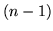
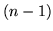
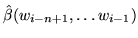

In [Katz 1987] a back off scheme is proposed and used alongside
Good-Turing discounting. In this method probabilities are
redistributed via the recursive utilisation of lower level conditional
distributions. Given the  -gram case, if the
-gram case, if the  -tuple is not observed
frequently enough in the training text then a probability based on the
occurrence count of a shorter-context -tuple is used
instead - using the shorter context estimate is referred to as
backing off.
In practice probabilities are typically considered
badly-estimated if their corresponding word sequences are not
explicitly stored in the language model, either because they did not
occur in the training text or they have been discarded using some
pruning mechanism.
-tuple is not observed
frequently enough in the training text then a probability based on the
occurrence count of a shorter-context -tuple is used
instead - using the shorter context estimate is referred to as
backing off.
In practice probabilities are typically considered
badly-estimated if their corresponding word sequences are not
explicitly stored in the language model, either because they did not
occur in the training text or they have been discarded using some
pruning mechanism.
Katz defines a function
 which represents the total
probability of all the unseen events in a particular context. The probability mass
is then distributed amongst all the
unseen  and the language model probability estimate becomes:
and the language model probability estimate becomes:
| (14.18) |
| (14.19) |